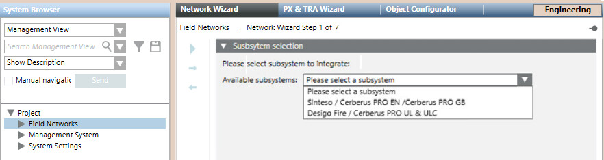
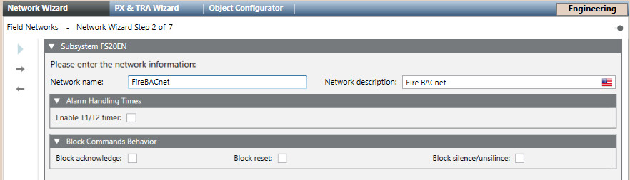
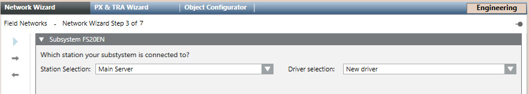
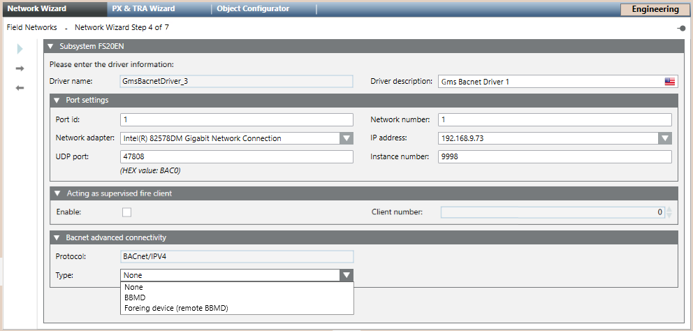
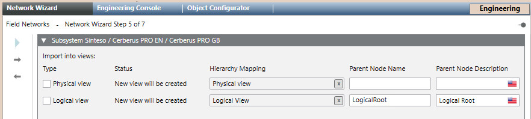
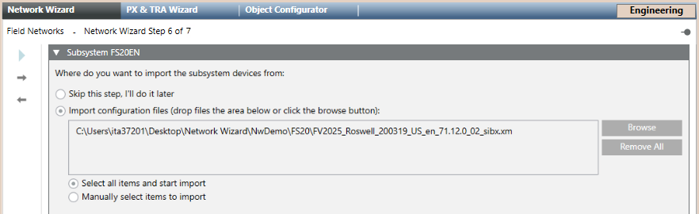
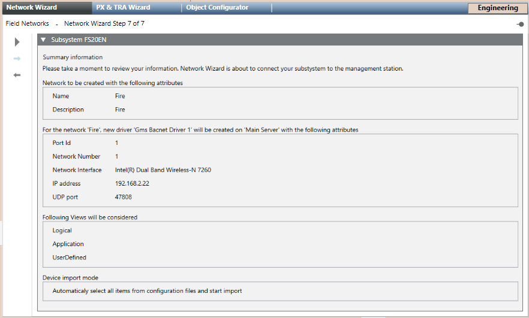

Running FS20 Sinteso Network Wizard
Scenario
You want to create a new BACnet fire network for FS20 Sinteso.
This wizard provides a quick procedure that simplifies the general configuration workflow.
For reference information, see:
Prerequisites
- You are familiar with the FS20 integration via BACnet. See the reference section.
- The following extension modules were installed and included in the active project:
- Network Setup Wizard
- Sinteso FS20 EN
- System Manager is in Engineering mode.
- System Browser is in Management View.

To speed configuration, make sure the Desigo CC Transaction Mode is set to Simple or the Automatic Switch of Transaction Mode is set to True.
The automatic switch setting is recommended. Without it, to re-enable the logs, you need to set the Transaction Mode to Logging at the end of the configuration procedure.
1 – Select the Subsystem
- Select Project > Field Network.
- In the Network Wizard tab, in Available subsystems, select the type of fire subsystem.
- Click
 to proceed to the next page.
to proceed to the next page.

2 – Configure Network Name and Description
- Enter the fire Network name. The corresponding Network description field is filled out automatically and you can customize it to provide a better definition for users.
- (Optional) In Alarm Handing Times, select the check box to enable T1/T2 timer.
- (Optional) In Block Commands Behavior, select the check box to enable broadcasting of the acknowledge, reset, and silence/unsilence commands across the fire network.
- Click to proceed to the next page.

3 – Select the Driver
- In Station Selection, select a server or FEP station.
- In Driver Selection, do one of the following:
- Select New Driver to create a new BACnet driver.
- Select a previously created BACnet driver.
- Click to proceed to the next page.

4 – Configure Driver Settings
- (Optional) In the main expander, customize the Driver description.
NOTE: Keep the description different from that of any other driver on the same station. - In the Port settings expander, check and modify as necessary the default driver settings:
- In Network number, enter the network number where your management station is connected (typically =1).
- In Port id, set the same value as in Network number.
- In Network adapter, select the hardware adapter in the drop-down list.
- In IP address, set the unique IP address.
- In UDP port, the default port is 47808.The UDP port of each physical port have to be unique. If two drivers are assigned to the same Network Interface Card (NIC), you can use the value 47809 for the UDP port of the physical port of the second driver.
- In Instance number, enter the BACnet Device Identifier number to assign to the driver as a BACnet client (default: 9998).
NOTE: The Instance number must match the BACnet device ID set in the BACnet client configuration of the panel configuration tool.
For more information, refer to the general configuration procedure. - (Optional) You can use the BACnet driver to supervise the client application (the user interface), in the entire system, by performing these steps:
- In the Acting as supervised fire client expander, select the Enable check box.
- In the Client number field, enter the Address of the BACnet client, as set in the panel configuration tool.
- In the BACnet advanced connectivity expander, set the connection Type, which can be:
- None (default)
- BBMD
- Foreign device (remote BBDM)
For more information, refer to BBMD and Foreign Device. - Click to proceed to the next page.

5 – Import the Views
- In Type, select the check box of the view you want to import.
- In Status, you can check if the view already exists. If not, a new one will be created.
- (Optional) In Hierarchy Mapping, drag the root node of the view if you want to keep the same hierarchy mapping.
- In Parent Node Name and Parent Node Description, you can see the name and the description of the view, if it already exists.
- (Optional) In Parent Node Description, enter the desired description of the view.
NOTE: You cannot edit the Parent Node Name. - Click to proceed to the next page.

6 – Import the Fire System Configuration
- (Optional) Select Skip this step, I’ll do it later to skip the import step and display the driver parameters.
- Select Import configuration files and do the following:
- Click Browse.
- Locate and select the file you want import and click Open.
- Repeat this operation for every SiB-X file you want import.
- The files display in the box.
- (Optional) Click Remove All to clear the box and repeat this step from the beginning.
- Select one of the following:
- Select all items and start import, to import all items (panel configuration) from the selected files.
- Manually select items to import, to choose specific items in the next step.
- Click to proceed to the next page.

7 – Start the Network Wizard
- Check the summary information.
(Optional) If you want to modify any item, click Previous to go back to the previous page. After the required modifications, press Next to reach this final page again.
to go back to the previous page. After the required modifications, press Next to reach this final page again. - Click Start
 to run the import.
to run the import. - The System Manager dialog box appears, click Yes to confirm the start.
NOTE: If you chose Manually select items to import in the previous step, a selection page displays. Do the following:
a. Select the item you want import in the left box Source Items and click the right arrow . Repeat this operation for every item you want import or click the all right arrow
. Repeat this operation for every item you want import or click the all right arrow  to import them all.
to import them all.
b. (Optional) Click the left arrow to remove one item from the right box Items to import or the all left arrow
to remove one item from the right box Items to import or the all left arrow  to remove them all.
to remove them all.
c. Click Import. - The import starts and a progress bar displays.
- After a few seconds, the driver and network nodes appear in System Browser. If the import was selected, information from all panels is imported from the XML file.
- A backup copy of the imported file is saved in the project folder, in the shared\Imported_Config_Files\[subsystem name]\ subfolder.
The file is compressed into a ZIP file named after the current date and time. For example, 2021-10-22_13-52-07.zip.
NOTE: See also the configuration procedure of the backup folder (search for Handling Backup Size of Imported Files).
You can control the disk space occupancy, and also disable the backup copy altogether.
NOTE: Do not use this wizard to modify any settings. Refer instead to the general configuration procedure.
